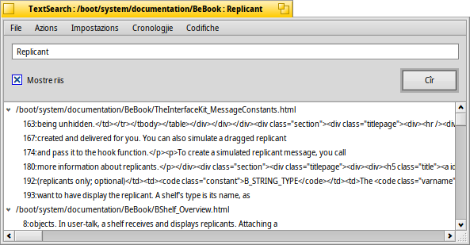

TextSearch
TextSearch
| Deskbar: | Nissune vôs, di solit inviât vie component adizionâl di Tracker | |
| Posizion: | /boot/system/apps/TextSearch | |
| Impostazions: | ~/config/settings/TextSearch |
TextSearch al cîr une stringhe tai file di test. Di solit al ven invocât dal menù contestuâl dai components adizionâi di Tracker su la selezion dai file o des cartelis dulà che tu desideris cirî.
Tu inserissis une stringhe di ricercje inte casele di test parsore e tu frachis INVIE o tu fasis clic su par scomençâ. Se al è segnât, i risultâts a vegnin slargjâts in automatic par mostrâ lis riis dal file che a contegnin la stringhe di ricercje.
Dome cualchi peraule su cualchi element dal menù che se no si spieghe di bessôl:
Menù File | ||||
| ALT N | Al vierç un gnûf barcon dulà che tu puedis cirî intal stes file/cartele une altre stringhe. | |||
| ALT F | Ti permet di sielzi un gnûf grup di file e cartelis dulà lâ a cirî. In alternative tu puedis strissinâ e molâ i file/cartelis intal barcon. | |||
Menù Azions | ||||
| ALT T | Al gjave de liste dutis lis vôs che no son in chel moment selezionadis. | |||
| ALT O | Al vierç i file che in chel moment a son selezionâts, cu la lôr aplicazion preferide (tant che un dopli-clic). Se si trate di un editôr di test che lu supuarte (come Pe), tu puedis saltâ daurman ae rie esate dulà che e je stade cjatade la stringhe di ricercje. | |||
| ALT K | Al vierç in Tracker la posizion dai file che in chel moment a son selezionâts. | |||
| ALT B | Al copie la selezione atuâl intes notis. | |||
Menù Impostazions | ||||
| Chest al è util cuant che si lavore intun ambient dal gjenar "unix", dulà che dispès i file di aministrazion a vegnin platâts dentri di ".cartelis/". I sistemis pe gjestion des varis versions dai sorzints, come SVN e CVS, a son esemplis di aplicazions che ju doprin e chescj programs a vegnin doprâts une vore in Haiku. | ||||
| TextSearch al dopre il strument a rie di comant grep. Par lui, i caratars speciâi come '"*\$?! e i spazis a scugnin jessi interpretâts cul caratar “escape” \. Ativâ cheste impostazion al significhe che tu scugnis fâlu di bessôl, ma di cuintri ti garantìs lis potenzialitâts des espressions regolârs. | ||||
| TextSearch cumò al è util dome par cirî stringhis tai file di test sempliçs. Se si disative che impostazion al cirarà dut câs su ogni gjenar di file. | ||||
| Al sfuarce la vierzidure dai file intal editôr di codiç preferît (che al gjestìs text/x-source-code). In câs contrari un file al vignarà viert in cualsisei aplicazion stabilide pal so gjenar di file. Util, par esempli, cuant che si modifiche i file HTML che di solit a vegnin vierts cul navigadôr. | ||||
Menù Cronologjie | ||||
| Al conten lis stringhis cirudis di resint. | ||||
Menù Codifiche | ||||
| Ti permet di sielzi codifichis di caratar diviersis se a coventin. | ||||